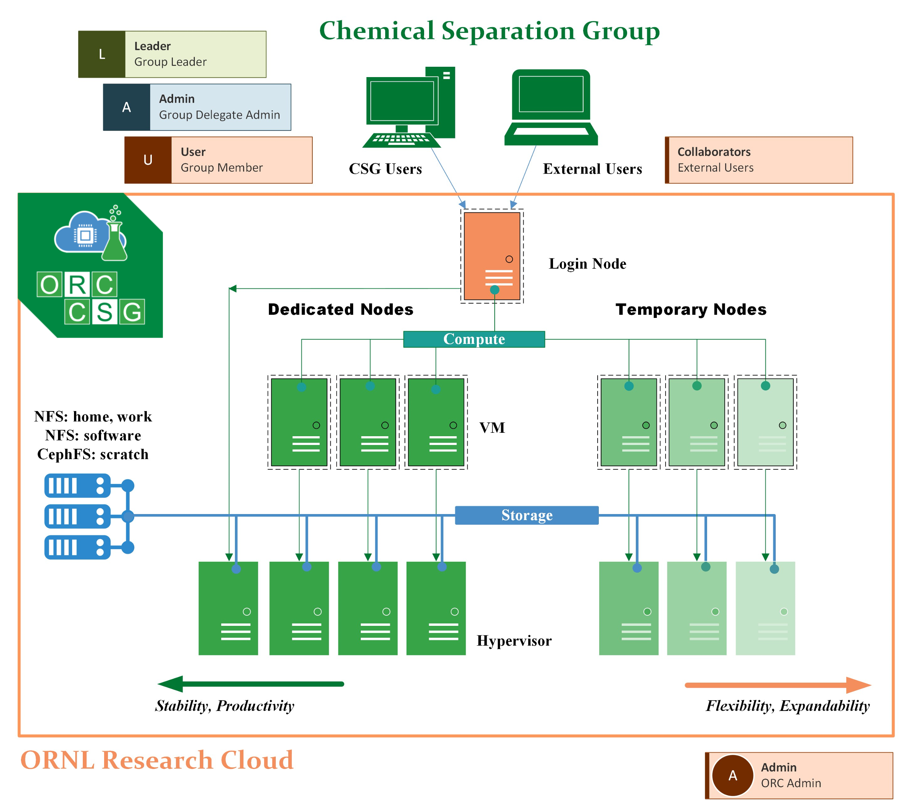

ORC-CSG Resources

Computational Resources
Dedicated nodes
ORC-CSG currently has three dedicted nodes that are perpetually running to provide computational resources for users. These three compute nodes use AMD EPYC 7702 CPUs, and user can use 120 cores with NUMA optimization or 128 cores without NUMA optimization.
Node Name |
# cores |
NUMA optimized? |
|---|---|---|
orc-csg-amd-8 |
120 |
Y |
orc-csg-amd-[9-10] |
128 |
N |
On different applications, depending on the parallelization method (OpenMP, MPI, and etc.), users may experience slightly different performances with or without NUMA optimization.
Expandable nodes
From time to time, users may request extra computational resources which are not available yet in the current ORC-CSG system. The request for temporary nodes is often possible, but not gauranteed, which totally depend on the availability in ORC.
Note: in ORC-CSG, a short list of softwares are already compiled for the Intel-Nvidia GPU nodes which are available in ORC.
Data Storage Resources
Three file systems are implemented in ORC-CSG:
an NFS partition of 950 GB mounted in the
/homedirectory
an NFS partition of 950 GB mounted in the
/nfs/workdirectory
an CephFS partition of 4.0 TB mounted in the
/cephfs/scratchdirectory
For each user, these file space can be accessed using the environment variables $HOME, $WORKDIR, and $SCRATCH.
The /home and the /nfs/work directories using the NFS, are considered to be more stable than the CephFS. The only difference between users’ $HOME and $WORKDIR directories is that $WORKDIR can be accessed by other users by default. The CephFS is designated to I/O intensitive (frequently read and write data) jobs, especially for computations which need to offload the temporary data storage from memories to hard drive.
When user log in to the ORC-CSG system, the usage status of the three file systems are shown as follows:
~~~~~~~~~~~~~~~~~~~~~~~~~~~~~~~~
Mounted on Size Avail Use%
/home 950G 639G 33%
/nfs/work 950G 715G 25%
/cephfs/scratch 4.0T 3.1T 22%
~~~~~~~~~~~~~~~~~~~~~~~~~~~~~~~~